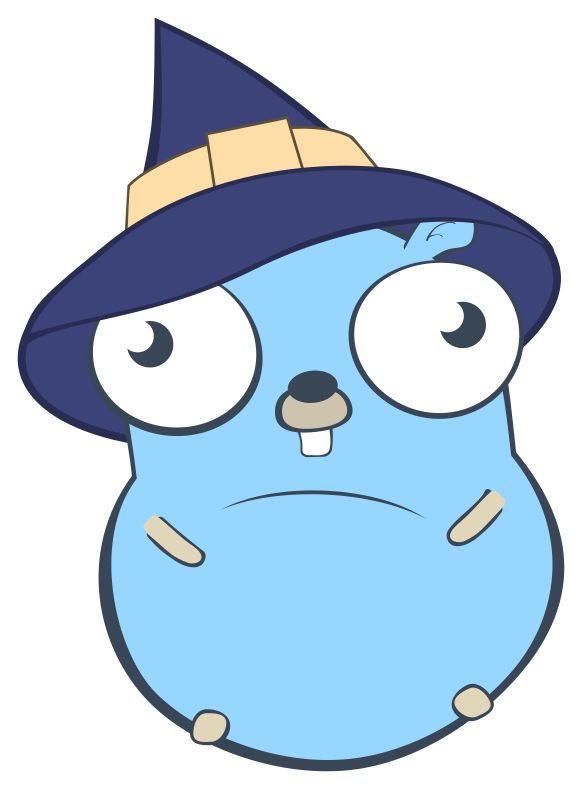

{{define "base_guest"}}
<!doctype html>
<html>
  <head>
    <meta charset="utf-8">
    <title>{{template "title" .}} - Bookshelf</title>
    <link rel="stylesheet" href="../static/css/tailwind.css"/>
    <link rel="stylesheet" href="../static/css/main.css"/>
    <script src="../static/js/htmx.min.js"></script>
  </head>
  <body class="flex justify-between flex-col items-center h-screen w-screen bg-orange-linear m-0 pt-8 px-10">
    <main class="flex-grow bg-white w-full rounded-2xl p-4 relative overflow-hidden">
      {{template "main"}}
      
      {{ with .Flash }}
        <div class="bg-orange-linear text-white rounded-xl p-4 absolute top-[2rem] right-[2rem]">{{.}}</div>
      {{end}}
    </main>
  </body>
  <footer class="mx-auto">Powered by <a href="https://golang.org">Golang</a></footer>
</html>
{{end}}
